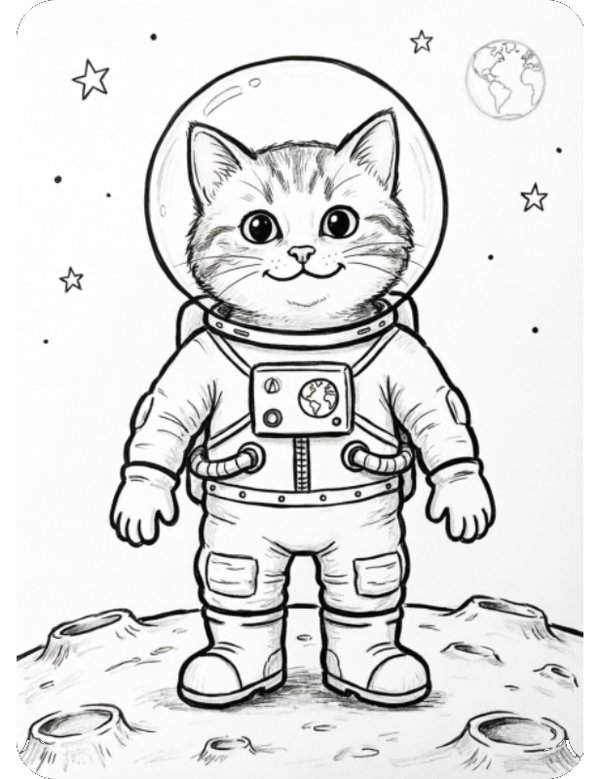
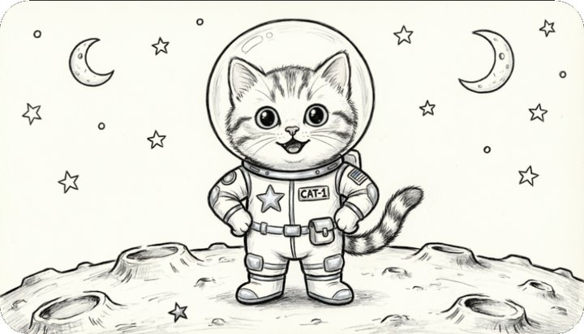

Бесплатные уроки · Qwen
Нарисуешь раскраску с любимым героем ребёнка и проверишь лист до печати.
Раскраска с любимым героем — кот-космонавт, трактор, единорог в шапке-ушанке, — какой нет в магазине. Qwen рисует её за минуту, печатаешь на обычном принтере. Учимся просить именно раскраску, а не рисунок карандашом, и проверять лист до печати.

Раскраска для ребёнка [5 лет]: [кот-космонавт на Луне]. Только чёрные контуры на белом фоне, толстые линии, без теней, штриховки и серого. Крупные детали, которые легко раскрасить. Без надписей, букв, цифр и флагов.
Сначала мы написали коротко: «Раскраска для ребёнка 5 лет: кот-космонавт» — и формат не тронули. Вышел рисунок карандашом: серые тени и штриховка, которые не раскрасишь, россыпь мелких звёзд, горизонтальный лист. А на скафандре — английская надпись «CAT-1» и флаг США на рукаве.

С запросом из урока лист стал вертикальным, линии — толще, надписей нет. Но нашивка с флагом на рукаве осталась, хотя мы прямо написали «без флагов». И на кратерах ещё видна штриховка.
Наведи на картинку и нажми «Редактировать». Qwen меняет только то, что ты назвал, остальное оставляет.
Убери [нашивку с флагом на рукаве]. [Кратеры нарисуй только контуром, без штриховки]. Остальное не меняй.
У нас флаг исчез, а всё остальное осталось как было. Штриховка на кратерах — нет: из двух правок Qwen выполнил одну. Не страшно — повтори её отдельным сообщением.
Сохрани картинку кнопкой скачивания на ней и распечатай на листе А4.
Спроси ребёнка, кого он хочет раскрасить. Сделай раскраску в Qwen, поправь лишнее и распечатай.
Урок рассчитан на сайт chat.qwen.ai; у нас модель картинок Qwen-Image 2.0. Названия кнопок могут отличаться в приложении и после обновлений. Подписка на наше обучение не включает платные тарифы нейросетей.
Qwen — запросы урока проверены 3 октября 2026, модель картинок Qwen-Image 2.0.
Дальше в курсе ещё 5 уроков, первый — «Файл: расходы по категориям». Они открываются в приложении в Telegram: там же отметки прочитанного, серия и практика.
Открыть следующий урок в Telegram